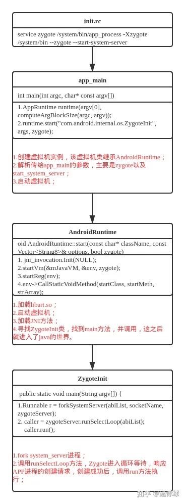

系统中运行的第一个Dalvik虚拟机程序叫作zygote，该名称的意义是“一个卵”，因为接下来的所有 Dalvik虚拟机进程都是通过这个“卵” 孵化出来的。
zygote进程对应的具体程序是app_process，该程序存在于system/bin目录下，启动该程序的指令是在init.rc中进行配置的。
Zygote进程中包含两个主要模块，分别如下：
- Socket服务端。该Socket服务端用于接收启动新的Dalvik进程的命令。
- Framework共享类及共享资源。当Zygote进程启动后，会装载一些共享的类及资源，其中共享类是在preload-classes文件中被定义，共享资源是在preload-resources中被定义。因为zygote进程用于孵化出其他Dalvik进程，因此，这些类和资源装载后，新的Dalvik进程就不需要再装载这些类和资源了，这就是所谓的共享。--> zygote进程预先会装载共享类和共享资源，这些类及资源实际上就是SDK中定义的大部分类和资源。因此，当通过zygote孵化出新的进程后，新的APK进程只需要去装载APK自身包含的类和资源即可，这就有效地解决了多个APK共享Framework资源的问题。
在Android系统中有以下两种程序：
- Java应用程序，主要基于ART虚拟机，所有的应用程序APK都属于这类Native程序，也就是利用C或C++语言开发的程序，如bootanimation。所有的Java应用程序进程及系统服务SystemServer进程都由Zygote进程通过Linux的fork()函数孵化出来的。 --> 每fork出的一个进程都是一个Dalvik虚拟机，独立的进程可以防止一个程序的崩溃导致所有程序都崩溃，这种虚拟机类似Java虚拟机，对于程序员来说，可以直接使用Java开发应用。
- 而native程序则由Init程序创建启动。
Zgyote是Android中的第一个ART虚拟机，他通过socket的方式与其他进程进行通信。这里的其他进程主要指系统进程——SystemServer。
Zygote是一个C/S模型，Zygote进程作为服务端，它主要负责创建java虚拟机，加载系统资源，启动SystemServer进程，以及在后续运行过程中启动普通的应用程序，其他进程作为客户端向它发出孵化请求，而Zygote接收到这个请求后就“孵化”出一个新的进程。比如，当点击Launcher里的应用程序图标去启动一个新的应所以程序进程时，这个请求会到达框架层的核心服务ActivityManagerService中，当AMS收到这个请求后，它通过掉牙Process类发出一个“孵化”紫禁城的Socket请求，而Zygote监听到这个请求后就立刻fork一个新的进程出来。

init.rc
init进程启动后，对init.rc文件进行了解析并执行了各个阶段的动作，而zygote进程就是这个过程中被触发启动的。直接看代码直观点：
/system/core/rootdir/init.rc
on late-init
...
# Now we can start zygote for devices with file based encryption
trigger zygote-start
...
on zygote-start && property:ro.crypto.state=encrypted && property:ro.crypto.type=file
# A/B update verifier that marks a successful boot.
exec_start update_verifier_nonencrypted
start netd
start zygote
start zygote_secondary
...
zygote在init.rc中被触发并通过【start zygote】的方式启动，而这里的zygote是init.rc文件中的服务，如下：
service zygote /system/bin/app_process -Xzygote /system/bin --zygote --start-system-server
class main
priority -20
user root
group root readproc reserved_disk
socket zygote stream 660 root system
onrestart write /sys/android_power/request_state wake
onrestart write /sys/power/state on
onrestart restart audioserver
onrestart restart cameraserver
onrestart restart media
onrestart restart netd
onrestart restart wificond
writepid /dev/cpuset/foreground/tasks
可见zygote服务最终调用了app_process这个可执行文件，并传入【--zygote】和【--start-system-server】这两个参数。
app_main
app_main是一个可执行文件，入口是main函数，具体源码如下：
/frameworks/base/cmds/app_process/app_main.cpp
int main(int argc, char* const argv[])
{
...
AppRuntime runtime(argv[0], computeArgBlockSize(argc, argv));
...
while (i < argc) {
const char* arg = argv[i++];
if (strcmp(arg, "--zygote") == 0) { //传参
zygote = true;
niceName = ZYGOTE_NICE_NAME;
} else if (strcmp(arg, "--start-system-server") == 0) { //传参
startSystemServer = true;
} else if (strcmp(arg, "--application") == 0) {
application = true;
} else if (strncmp(arg, "--nice-name=", 12) == 0) {
niceName.setTo(arg + 12);
} else if (strncmp(arg, "--", 2) != 0) {
className.setTo(arg);
break;
} else {
--i;
break;
}
}
...
if (zygote) {
runtime.start("com.android.internal.os.ZygoteInit", args, zygote);
}
...
}
专注zygote相关的关键代码，在这个main函数中，主要做了三件事：
1.使用AppRuntime类实例化了一个虚拟机runtime，而AppRuntime则继承AndroidRuntime;
2.解析传给app_main的参数，主要是zygote和start_system_server；
3.启动虚拟机。启动的方法start是父类AndroidRuntime的方法。注意第一个传参的参数。
zygote启动方法在AndroidRuntime中，进入观摩下。
AndroidRuntime
frameworks/base/core/jni/AndroidRuntime.cpp
void AndroidRuntime::start(const char* className, const Vector<String8>& options, bool zygote)
{
...
JniInvocation jni_invocation;
jni_invocation.Init(NULL); //加载libart.so
JNIEnv* env;
if (startVm(&mJavaVM, &env, zygote) != 0) {
return;
}
onVmCreated(env);
/*
* Register android functions.
*/
if (startReg(env) < 0) {
ALOGE("Unable to register all android natives\n");
return;
}
...
char* slashClassName = toSlashClassName(className != NULL ? className : "");
jclass startClass = env->FindClass(slashClassName);
if (startClass == NULL) {
ALOGE("JavaVM unable to locate class '%s'\n", slashClassName);
/* keep going */
} else {
jmethodID startMeth = env->GetStaticMethodID(startClass, "main",
"([Ljava/lang/String;)V");
if (startMeth == NULL) {
ALOGE("JavaVM unable to find main() in '%s'\n", className);
/* keep going */
} else {
env->CallStaticVoidMethod(startClass, startMeth, strArray);
}
}
...
}
start方法中，主要做了四件事：
1.加载libart.so，否则不能启动虚拟机；
2.启动虚拟机；
3.加载注册JNI方法；
4.根据传递给start方法的第一个参数，去寻找ZygoteInit类，找到类之后，找到该类的main方法，然后调用，在这之后就进入了Java的世界。
start方法的第一个参数为"com.android.internal.os.ZygoteInit"，然后通过FindClass方法找到ZygoteInit类，然后再调用相应的main方法进入到Java世界。
ZygoteInit
到了这里，就已经进入到了Java的世界，虚拟机已经运行起来，接下来要做的事就是启动system_server，然后做好自己的本分，等待孵化app的指令。具体详见main方法：
frameworks/base/core/java/com/android/internal/os/ZygoteInit.java
public static void main(String argv[]) {
...
if (startSystemServer) {
Runnable r = forkSystemServer(abiList, socketName, zygoteServer);
// {@code r == null} in the parent (zygote) process, and {@code r != null} in the
// child (system_server) process.
if (r != null) {
r.run();
return;
}
}
Log.i(TAG, "Accepting command socket connections");
// The select loop returns early in the child process after a fork and
// loops forever in the zygote.
caller = zygoteServer.runSelectLoop(abiList);
if (caller != null) {
caller.run();
}
...
}
主要做了三件事：
1.解析参数；
2.fork system_server;
3.调用runSelectLoop方法，等待进程孵化请求；
每个main方法一定会做的事情，那就是解析传入给它的参数，这里主要解析了start_system_server的创建需求，这个参数事从init.rc中传下来的。如果init.rc中有创建的system_server的需求，那么就会在这里被解析，然后进行创建。zygote在完成了system_server的创建后，调用runSelectLoop方法进行等待，响应app进程的创建请求，创建成功后，再调用run方法执行。